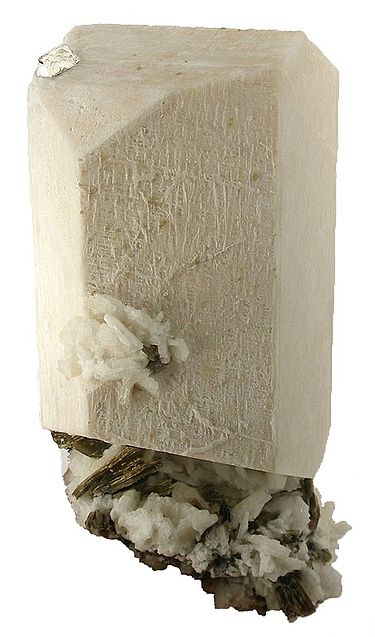
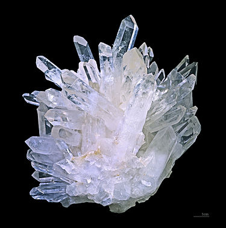
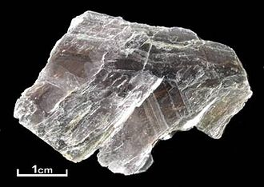
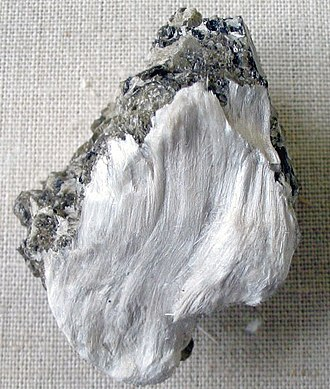
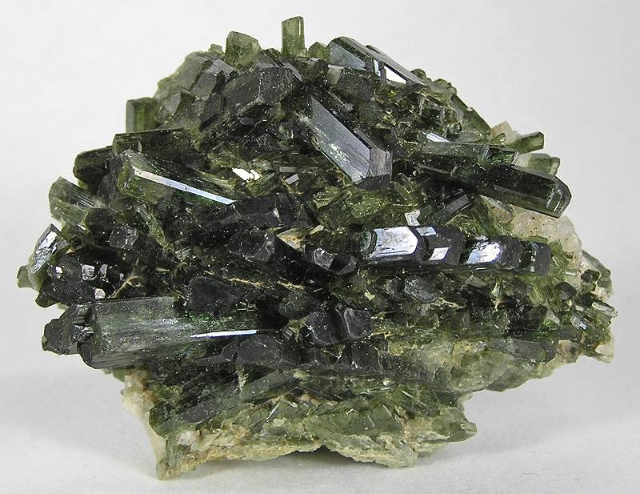
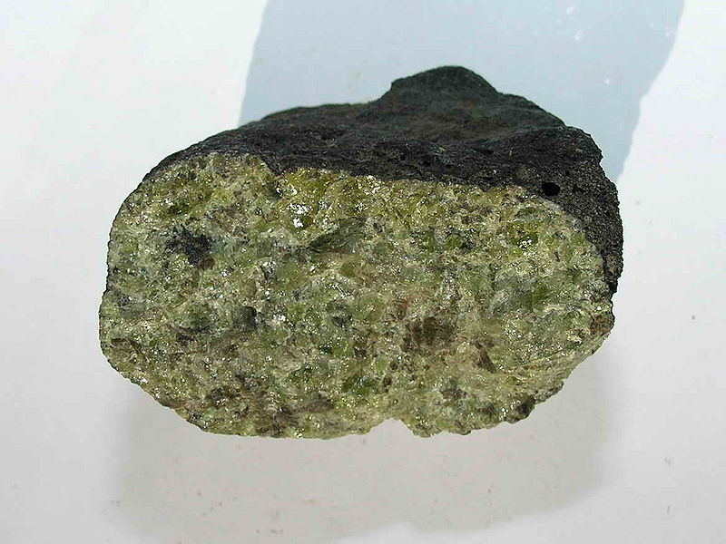
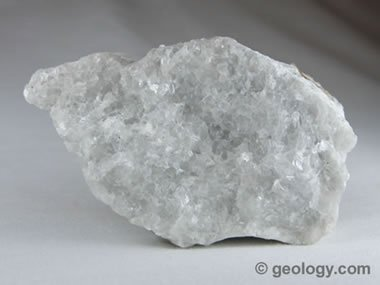

แร่ประกอบหิน
1.ตระกูลซิลิเกต

- เฟลด์สปาร์ (Feldspar)
เป็นกลุ่มแร่ที่มีมากกว่าร้อยละ 50 ของเปลือกโลก ซึ่งเป็นองค์ประกอบส่วนใหญ่ของหินหลายชนุดในเปลือกโลก เฟลด์สปาร์มีองค์ประกอบหลักเป็นอะลูมิเนียมซิลิเกต รูปผลึกหลายชนิด เมื่อเฟลด์สปาร์ผุพังจะกลายเป็นอนุภาคดินเหนียว (Clay minerals)

- ควอรตซ์ (SiO2)
เป็นซิลิกาไดออกไซด์บริสุทธิ์ มีรูปผลึกทรงหกเหลี่ยมยอดแหลม มีอยู่ทั่วไปในเปลือกทวีป แต่หาได้ยากในเปลือกมหาสมุทรและแมนเทิล เมื่อควอรตซ์ผุพังจะกลายเป็นอนุภาคทราย (Sand) ควอรตซ์มีความแข็งแรงมาก ขูดแก้วเป็นรอย

- ไมก้า (Mica)
เป็นกลุ่มแร่ซึ่งมีรูปผลึกเป็นแผ่นบาง มีองค์ประกอบเป็นอะลูมิเนียมซิลิเกตไฮดรอกไซด์ มีอยู่ทั่วไปในเปลือกทวีป ไมก้ามีโครงสร้างเช่นเดียวกับ แร่ดินเหนียว (Clay minerals) ซึ่งเป็นองค์ประกอบสำคัญของดิน

- แอมฟิโบล (Amphibole group)
มีลักษณะคล้ายเฟลด์สปาร์แต่มีสีเข้ม มีองค์ประกอบเป็นอะลูมิเนียมซิลิเกตไฮดรอกไซด์ ที่มีแมกนีเซียม เหล็ก หรือ แคลเซียม เจือปนอยู่ มีอยู่แต่ในเปลือกทวีป ตัวอย่างของกลุ่มแอมฟิโบลที่พบเห็นทั่วไปคือ แร่ฮอร์นเบลนด์ ซึ่งอยู่ในหินแกรนิต

- ไพร็อกซีน (Pyroxene group)
มีสีเข้ม มีองค์ประกอบที่เป็นแมกนีเซียมและเหล็กซิลิเกตอยู่มาก มีลักษณะคล้ายแอมฟิโบล มีอยู่แต่ในเปลือกมหาสมุทร

- โอลิวีน (Olivine)
มีองค์ประกอบหลักเป็นแมกนีเซียมและเหล็กซิลิเกต มีอยู่น้อยมากบนเปลือกโลก กำเนิดจากแมนเทิลใต้เปลือกโลก
2.ตระกูลคาร์บอเนต

- แคลไซต์ (Calcite)
เป็นแคลเซียมคาร์บอเนต (CaCO3) เป็นองค์ประกอบหลักของหินปูนและหินอ่อน โดโลไมต์ (Dolomite) ซึ่งเป็นแร่คาร์บอเนตอีกประเภทหนึ่งที่มีแมงกานีสผสมอยู่ CaMg(CO3) 2 แร่คาร์บอเนตทำปฏิกิริยากับกรดเป็นฟองฟู่ให้ก๊าซคาร์บอนไดออกไซด์ออกมา